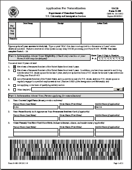
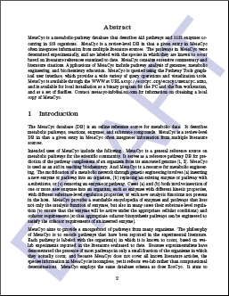
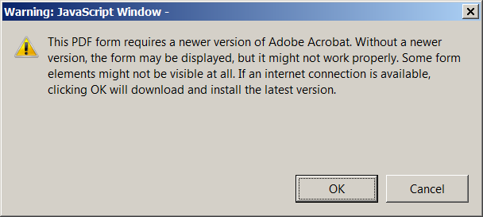

Sep 15, 2015 - AspPDF 3.4.0.2 Service Release Available
The new service release incorporates the following enhancements:
- In response to discovering a new rare class of PDF documents causing AspPDF to run out of memory and crash
during PDF-to-image conversion, the PdfPage.ToImage method has been thoroughly optimized to improve performance and reduce RAM footprint.
- When encountering PDF documents with an invalid page width/height combination, the ToImage method used to throw the exception
Invalid page width and/or height. Now it defaults to the US Letter page size without throwing an exception, and creates an entry
in the built-in error log instead.
- A bug in the Form Flattening module responsible for occasionally drawing form field content in unexpected places has been fixed.
The bug only affected a rare class of PDF forms with non-standard /Matrix entries.
- The PdfForm.Modify method has been enhanced to support a new parameter, Reset=true.
This parameter is a shortcut for resetting the current graphics state for all pages of the document to help achieve
consistent output during form flattening.
- A new live demo, Form Flattening,
has been added to demonstrate AspPDF's form flattening feature.
As always, upgrading is free for registered users.
Jul 18, 2015 - AspPDF 3.4.0.1 Service Release Available
The service release contains the following important fixes and enhancements:
- A serious bug in the CreateGraphicsFromPage method introduced in a previous service release has been fixed.
The bug caused incorrect content rendering when multiple source documents or pages were involved.
- A rare class of PDF documents with a non-standard font encoding has been discovered that caused AspPDF to enter an infinite loop and crash during PDF-to-image
conversion. Support for these documents has been added, and the problem fixed.
- The HTML-to-PDF module has been enhanced to support CSS properties background-size: cover and background-size: contain.
- The PdfPage.CreateTextbox has been enhanced to support the field text color via the Color parameter.
Upgrading is free for registered users.
May 25, 2015 - AspPDF 3.4 Released with Support for Client-Side Signing of Server-Side PDFs
AspPDF's digital signing functionality required that the PDF document being signed and the digital certificate
used for signing be both accessible to the PdfDocument.Sign method. In most cases,
this meant the private key had to be transferred to the server, which is often impossible or impractical
for security reasons.
As of AspPDF v3.4 (and also AspEncrypt v2.9), the PDF being signed and the signer certificate's private key
no longer need to physically meet. The PDF never has to leave the sever, and the private key never needs to leave the user's
workstation. Instead, the hash value being signed and the signature itself do all the travelling.
The new functionality is described in details in Section 8.4 - Client-Side Signing of Server-Side PDFs.
It is also demonstrated by a new Live Demo #10b (IE run as Administrator is required):
https://www.support.persits.com/pdf/demo_clientsign.asp
Mar 30, 2015 - AspPDF 3.3 Released with PDF/A Compliance
Version 3.3 enables the creation of PDF/A-compliant documents. It also implements a fix in its PDF-to-Image module to improve performance.
The PDF/A format is a subset of the regular PDF format with certain features, deemed incompatible with long-term archival and storage of documents, removed.
Several enhancements and fixes have been added to AspPDF, as well as a new method, PdfDocument.AddOutputIntent,
to bring the documents it creates to the PDF/A-1b compliance level.
For more information on the PDF/A functionality, see the new Section 12.4 - PDF/A Support.
In addition to this new feature, AspPDF 3.3 incorporates an improvement in its PDF-to-Image module that significantly reduces the conversion
time for certain PDFs, especially those using AES encryption.
Upgrading is free for registered users.
Mar 01, 2015 - AspPDF 3.2.0.6 Service Release Available
A bug responsible for a crash (A trappable error C0000005) when trying to use the PdfDocument.SendToPrinter method under certain conditions has been fixed.
For reasons yet unknown, a 32-bit process attempting to call SendToPrinter on the 64-bit versions of Windows 2012 and Windows 8
fails with the error "Access is denied", while a 64-bit process works well.
Previous versions of Windows are not affected.
A bug in the error handling code caused the component to crash under the above conditions. Service Release 3.2.0.6 fixes the crash.
However, the SendToPrinter method may still error out with the error
DocumentProperties failed. The error was: Access is denied.
To successfully use the SendToPrinter method on Windows 2012 and Windows 8, the 64-bit version of AspPDF should be used.
For a 32-bit process to be able to call the 64-bit version of AspPDF, asppdf64.dll needs to be registered under Component (COM+) Services.
Feb 18, 2015 - AspPDF 3.2.0.5 Service Release Available
This service release incorporates a number of important fixes and enhancements in the PDF-to-Image and other modules.
- A class of PDF documents has been discovered, all containing Chinese and/or Japanese characters, which failed
to convert properly to images, with the Chinese/Japanese characters disappearing during the PDF-to-Image conversion.
This problem has now been fixed:
- The PDF-to-Image module has been enhanced to handle unembedded fonts better. Previous versions
would always replace an unembedded font with a Helvetica Type1 font regardless of the unembedded font's name, while the current version
attempts to find a system TrueType font that matches the font's name for better conversion accuracy.
- A bug causing the component to crash when calling the Page.ExtractText method twice on the same page has been fixed.
- A bug in AspPDF has been discovered that causes new page content to disappear when the modified PDF is viewed in the Google Chrome browser
(Adobe Acrobat and Reader viewers are not affected.) Several attempts to fix the bug have been made recently, but the fixes
caused undesired side effects and had to be rolled back. We are confident that the current service release
is free of the "disappearing content" problem as well as all the side effects introduced previously while attempting to fix it.
Jan 09, 2015 - AspPDF 3.2.0.4 Service Release Available
The service release contains several minor bug fixes.
Dec 02, 2014 - AspPDF 3.2.0.3 Service Release Available
The service release contains several minor bug fixes.
Nov 28, 2014 - AspPDF 3.2.0.2 Service Release Available
The service release includes the following enhancements:
- A bug fix in the PDF-to-Image module improves the rendering of certain PDF documents containing anti-aliasing and thin lines, as shown below:
| Before: |  |
| After: | |
- A bug fix in the HTML-to-PDF module eliminates unsightly artifacts when a table cell uses a background image with the CSS attribute
background-repeat: no-repeat as shown below.
- Support for the <S> tag (strike-through) has been added to the DrawText method (HTML mode.)
- Support for the Copies parameter has been added to the PdfDocument.SendToPrinter method
enabling the printing of multiple copies of a PDF document. Previous versions could only print one copy at a time.
Oct 23, 2014 - AspPDF 3.2.0.1 Service Release Available
The service release incorporates two important enhancements:
- Performance improvement in the Document Stitching module.
It has been pointed out by some of our clients that the AppendDocument method may take a very long time when dozens or hundreds
of documents are stitched together, and the processing time seems to grow quadratically with the number of documents being appended.
This serious performance problem has been identified and fixed. The processing time is now O(n log n) vs. O(n2) in previous versions.
-
Support for PDF417 Barcode-equipped government forms.
Some US government agencies such as the USCIS have started using barcode-equipped forms which allow a processing clerk to transfer the content
of a paper form to the computer system instantly by scanning a 2-dimensional barcode residing on each page of the form and encoding the
form's field data. AspPDF now has the capability to programmatically fill out these forms and generate the PDF417 barcodes in strict
accordance with the government specifications. This feature is described in
Section 11a.8 - Barcode-equipped Government Forms.

Sep 16, 2014 - AspPDF 3.2 Released
The new version offers the following new features and enhancements:
- The new method PdfDocument.AddTemplate makes it easy
to build a new document from PDF templates as opposed to blank pages.
Once one or more template graphics are linked
to a document via the AddTemplate method, these templates automatically become the background
for some or all newly created pages of the document.
This feature simplifies converting HTML to PDF via the ImportFromUrl method
when the content needs to appear on top of templates as opposed to blank pages, and the total number of pages
is not known in advance.
The new feature is described in detail in Section 13.8 - Templates of the user manual.
- A bug responsible for not displaying filled form items in the Google Chrome PDF viewer has been fixed. This bug only affected
Google Chrome, not the Adobe viewers.
- Support for TIFF images with a relatively rare reversed-bit-order option has been added.
- Enhancements/fixes have been made in the handling of border-collapse: collapse and
position: absolute CSS properties by the HTML-to-PDF module.
- Other minor bugs have been fixed.
Aug 11, 2014 - AspPDF 3.1.0.2 Service Release Available
In response to some of our clients' problems scanning Code 128 barcodes generated by the previous versions of AspPDF,
we have implemented a new encoding algorithm for this popular barcode to improve its scannability. The old implementation is still supported for backward compatibility.
To use the new implementation, referred to as "Code 128 Auto" in the user manual,
the parameter Type=24 should be passed to the DrawBarcode method.

The service release also implements image alignment to the center and right/bottom in the PdfAnnot.SetFieldImage method.
Previous versions only allowed the default left/top alignment.
Jul 01, 2014 - AspPDF 3.1.0.1 Service Release Available
The service release fixes a bug in the PDF-to-Image module responsible
for the incorrect rendering of certain types of shadings:
| Previous versions | Current version |
|---|
| |
Jun 02, 2014 - AspPDF 3.1 Released with Transparency Support
- In response to your numerous requests, we have added transparency support to AspPDF.
Version 3.1 is capable of drawing semi-opaque text, images and graphics. Various blending
modes and transparency-group options are supported.
In the previous versions, transparency support was limited to PNG images with an alpha channel.

To implement transparency, a new object has been added to the AspPDF object model: PdfGState.
This object represents both a graphics state and transparency group, the two important concepts in the PDF transparency model.
Also, a whole new chapter has been added to the User Manual describing this new feature,
furnished with plentiful illustrations and code samples: Chapter 17 - Transparency.
- A new parameter, Color, has been added to the PdfDocument.SendToPrinter method.
It enables a document to be printed in color on a color printed. Previous versions could only print documents in black-and-white, even on color printers.
May 06, 2014 - AspPDF 3.0 Released with XFA Support
AspPDF 3.0 offers the following new features and enhancements:
- Adobe XFA support. XML Forms Architecture (XFA) designed by Adobe enables the creation of dynamic forms
described by XML.
AspPDF 3.0 is capable of filling out XFA forms via the new PdfForm properties XFADatasets and XFATemplate.
Previous versions could only fill out traditional (non-XFA) PDF forms.
The new functionality is described in detail in Section 11a.7 - XFA Support.
- Improved page break support in OpenUrl method. The recently added OpenUrl method has been enhanced to enable page-splitting
along horizontal colored stripes which serve as page-break markers in the HTML document.
This functionality is described in Section 16.2 - Pagination (Sub-section 16.2.3 - Colored Page Breaks).
- Password authentication bug fixed. A class of password-protected PDF documents has been discovered which caused the OpenDocument method to return
Nothing (null) even with a correct password. This bug has now been fixed.
- A bug has been fixed responsible for the error
JPX stream has no supported color spec.
during the PDF-to-image conversion of some rare documents.
- Various other minor bugs have been fixed.
Mar 17, 2014 - AspPDF 2.9.0.1 Service Release Available
The service release contains the following enhancements and fixes:
- The PdfFonts.LoadFromFile method now supports .TTC files (TrueType collections) in addition to .TTF and .OTF files.
A 1-based index can optionally be appended to the .ttc file path, separated by a comma, to specify which font to retrieve
from the collection:
Set Font = Doc.Fonts.LoadFromFile("c:\Windows\Fonts\gulim.ttc,2")
- Certain rare PDF document produced the errors
Invalid DCT quantization table.
and
JPX QCC marker segment before QCD segment.
during PDF-to-image conversion. This deficiency has now been fixed.
- Better error handling has been added to the PdfPreview.SendToPrinter and PdfDocument.SendToPrinter methods.
- Several minor bugs have been fixed.
Feb 06, 2014 - AspPDF 2.9 Released
The new version implements a plethora of new features, enhancements and fixes.
- IE-based HTML-to-PDF conversion. First and foremost, AspPDF's HTML-to-PDF functionality has been expanded.
In addition to the ImportFromUrl method, which uses our in-house HTML-to-PDF conversion engine, there is now the OpenUrl
method which uses Microsoft Internet Explorer's HTML rendering engine. This enables your application
to create precise, albeit rasterized, snapshots of any HTML document, no matter how complex.

This new feature is described in detail in Chapter 16 - IE-based HTML-to-PDF Conversion.
- JavaScript removal.
The PdfForm object now has a new method, Modify, which, among other things, enables you to remove unwanted
JavaScript from a form. Many PDF forms display the following JavaScript message after being flattened:

Calling the method
objDoc.Form.Modify("RemoveJavaScript=true");
removes this warning. For more information on the Modify method, see Section 11a.6 - JavaScript Removal and Other Features.
-
New TrimBox and BleedBox properties. The PdfPage object now has these two properties in addition to the existing MediaBox and CropBox properties
for better production support.
- Better TIFF and BMP image support. AspPDF now supports TIFF images that use Adobe Flate compression. Also, BMP images with negative
height values are now supported.
- Tray selection in SendToPrinter method. You can now select a paper tray via the Tray parameter
when using the PdfDocument.SendToPrinter method.
- Text Extraction fixes. Several important bugs have been fixed in the PdfPage.ExtractText method.
These bugs were responsible for incomplete and/or incorrect text extraction on some PDF documents.
- Underlined/justified text bug fixed.
A bug in the ImportFromUrl method responsible for showing broken lines on underlined text with JUSTIFY alignment has been fixed:
Older versions:
Mary had a little lamb whose fleece was white as snow
Current version:
Mary had a little lamb whose fleece was white as snow
As always, upgrading is absolutely free for registered users.
Dec 05, 2013 - AspPDF 2.9 Beta 1 with IE-based HTML-to-PDF Conversion Released
We are happy to announce the public beta release
of Internet Explorer-based PDF-to-HTML Conversion, a new and exciting feature
enabling your application to create a precise, albeit rasterized, snapshot
of any HTML document, no matter how complex, and convert it to PDF in just a few lines of code.
The new feature is described in Chapter 16 of the User Manual.
Oct 25, 2013 - AspPDF 2.8.0.2 Service Release Available
The service release contains the following fixes:
- Certain rare PDF documents with irregular Flate-compressed data would produce the exception "Decoder failed" during text extraction
or PDF-to-Image conversion. The new version suppresses this exception and allows the process to continue
despite the irregularity in the data.
- Some PDF documents have been discovered that cause the PDF-to-Image conversion
process to take an unreasonable amount of time. The bottleneck for this deficiency has been
identified and fixed.
- A minor memory leak in the font processing module has been discovered and fixed.
Oct 10, 2013 - AspPDF 2.8.0.1 Service Release Available
Version 2.8.0.1 implements the following important fixes:
- A bug affecting the PdfPages.Add and PdfPages.Remove methods has been fixed.
The bug caused the addition and removal of pages in some documents with a complex
tree structure to be performed incorrectly.
- A bug in the document-stitching module (PdfDocument.AppendDocument method) causing
document corruption in certain rare PDFs has been fixed.
The bug caused Adobe Acrobat to produce the error "Insufficient data for an image"
while viewing the composite documents produced by the stitching operation.
- A bug causing crashes on certain documents when calling PdfPage.CreateRadiobutton,
PdfPage.CreatePushbutton and other field-creating methods has been fixed.
- A new version of the zlib compression library has been integrated with AspPDF for Flate filter
decompression. The old version of zlib occasionally caused crashes on
certain rare PDF documents during PDF-to-Image conversion.
- Several other minor bugs in the PDF-to-Image and drawing modules have been fixed.
Aug 28, 2013 - AspPDF 2.8 Released
Structured Text Extraction
The new version expands the existing raw text extraction functionality
by allowing the text fragments extracted from a page to be accompanied by
their respective coordinates and dimensions. This allows you to know where exactly a particular
text string or string fragment is on the page.
This feature is implemented via the PdfPreview object's new TextItems
collection.
For more information about this feature, see Section 14.7 - Structured Text Extraction
of the User Manual.
CSS border-radius Support
The HTML-to-PDF conversion module has been enhanced to add support for
borders with rounded corners defined by CSS properties border-radius,
border-top-left-radius, border-top-right-radius, border-bottom-left-radius
and border-bottom-right-radius.
|
Hello World!
|
|
<style>
div.rounded
{
width: 100;
height: 60;
border-left: 50pt solid yellow;
border-right: 20pt solid red;
border-top: 30pt solid green;
border-bottom: 30pt solid blue;
border-radius: 20pt 30pt 40pt 50pt / 20pt 40pt 20pt 50pt;
padding: 20pt;
}
</style>
<div class="rounded">Hello World!</div>
|
Also a number of minor bugs have been fixed in various modules.
Aug 05, 2013 - AspPDF 2.7.0.1 Service Release Available
AspPDF's TIFF decompression engine has been enhanced to include support
for CCITT Group 3-2D compression (often referred to as CCITT G32D).
This relatively rare variation of the CCITT compression is found in the duotone
TIFF images of scanned or faxed documents. Previous versions
would not reject G32D-compressed TIFF images but decompress them incorrectly.
This service release also makes small improvements in the document stitching module.
Jul 29, 2013 - AspPDF 2.7 Released
The new version offers the following features:
- Full document printing with duplex support
- Color space support extended to PdfTable and other objects
- SetFieldValue enhanced
- The handling of auto-size form fields
has been improved to make the automatic
calculation of font size more consistent with Adobe products.
- Minor bugs fixed
- Several minor bugs in the HTML-to-PDF and other modules have been fixed.
Jun 07, 2013 - AspPDF 2.6.0.5 Service Release Available
The new service release incorporates many important fixes and enhancements
in several modules.
PDF-to-Image Conversion:
- Previous versions would create a temporary file on disk whenever a non-embedded
TrueType font was enountered in the PDF file being converted to an image.
The new version performs all operations in memory and no longer creates temporary files.
- When failing to find a substitute font for a non-embedded TrueType font,
the new version would fall back on the "Arial" font.
Previous versions would abandon the text rendering operation altogether
in this situation.
- The handling of non-embedded Type 1 fonts has been improved as well.
- Previous versions did not always properly handle Type 3 fonts. The new version fixes this
deficiency.
Form Flattening:
- Previous versions would occasionally leave some of the fields unflattened
when the Form.Flatten() method was used. The new version fixes this bug.
- Previous versions would incorrectly flatten text fields containing the
text "BT". The new version fixes this bug.
Other Modules:
- Several minor bugs have been fixed in the parsing and other modules.
Apr 09, 2013 - AspPDF 2.6.0.4 Service Release Available
- A bug causing AspPDF (64-bit) to crash on certain documents during PDF-to-Image
conversion on the 64-bit versions of Windows 8/2012 has been fixed.
- A bug causing some form fields to "jump" (change position) during form flattening
has been fixed.
- Various minor bugs in the PDF-to-Image and other modules have been fixed.
Mar 22, 2013 - AspPDF 2.6.0.3 Service Release Available
- This service release fixes a bug responsible for the error HTML rendering error: cannot obtain font ""
generated by the DrawText method on some fonts.
- The method PdfPreview.SendToPrinter is enhanced
to allow the printer name argument to be omitted and the default printer
name for this machine to be used instead.
- Support for TIFF images with a non-standard "Planar Configuration" parameter has been added.
Feb 27, 2013 - AspPDF 2.6.0.2 Service Release Available
- This service release fixes a bug causing the PDF-to-Image module
to generate the error "Invalid JPX stream" on some PDF documents.
This bug was introduced in a recent release by mistake.
- Support for TIFF images using JPEG compression has been added.
- Minor enhancements to the HTML-to-PDF module have been made.
Feb 04, 2013 - AspPDF 2.6.0.1 Released with Major Form Enhancements
This service release finalizes and documents a series of major improvements
in AspPDF's form fill-in functionality. The following new features
have been added:
- SetFieldValue, the workhorse method of the form fill-in module,
has been enhanced to support fields with font size set to "auto".
The handling of Unicode characters in form fields has also been improved.
- In response to your numerous requests, a "fontless" version of the SetFieldValue
method, called SetFieldValueEx, has been added to the PdfAnnot object.
The new method only takes a single argument, the text string. It determines
the font automatically based on the information embedded in the PDF form
being filled in. For more information, see Section 11a.1.2
of the user manual.
- Form flattening functionality has been added via the new PdfForm method
Flatten. Flattening a form means turning all of its fields into
static graphics with no possibility for further editing.
For more information, see Section 11a.5
of the user manual.
- Various minor bugs have been fixed.
Jan 31, 2013 - AspPDF 2.6 Released, 64-bit Crash Fixed
This unscheduled release addresses a crash occurring
in the 64-bit version of AspPDF running on 64-bit Windows 8 and Windows 2012 (IIS 8).
The bug fixed by this release only affects the 64-bit version of AspPDF,
and seems to only manifest itself on Windows 8/2012 but not earlier 64-bit versions
of Windows such as 2003, 2008 and 7.
Version 2.6 also includes a preliminary version of the PdfForm method Flatten
which flattens a PDF form (i.e. turns its interactive fields into static graphics)
and PdfAnnot method SetFieldValueEx which, unlike SetFieldValue, does not require
a font argument. Both methods will be documented shortly. The old SetFieldValue
method has also been enhanced to support auto-size text fields.
Jan 21, 2013 - AspPDF 2.5 Released
The new version offers the following features:
- Support for a variety of color spaces has been added, namely
DeviceGray, CalRGB, CalGray, Lab, ICCBased, Indexed, Separation and DeviceN.
Previous versions only supported the DeviceRGB and DeviceCMYK color spaces.
Two new objects, PdfColorSpace
and PdfFunction, have been added to the AspPDF object model
to represent color spaces and their supplementary tools, transformation functions.
A whole new chapter, Chapter 15, has been added
to the User Manual to describe these two objects in detail.
- The SetFieldValue method of the PdfAnnot object
has been improved to fix the "shifting text" problem (the content of form field
shifts slightly when the field is switched from the display to edit mode.)
Dec 06, 2012 - AspPDF 2.4 Released
The new version offers the following features:
Oct 22, 2012 - Service Release 2.3.0.2 Available
The service release fixes several minor and medium-level bugs in the parsing
module as well as HTML-to-PDF functionality.
Oct 10, 2012 - Service Release 2.3.0.1 Available
The service release addresses the error
No /Pages entry in the document catalog.
produced by some badly formed PDF documents. These documents
are now opened without an error.
The service release also fixes a bug in the text extraction functionality introduced by an earlier
release causing memory leaks, and several other minor bugs.
Jul 30, 2012 - AspPDF 2.3 Released
The new version enables another document's pages to be drawn on this document.
The new method PdfDocument.CreateGraphicsFromPage
creates an instance of the PdfGraphics object from another document's page
which can then be drawn on this document at an arbitrary location or locations,
with scaling and rotation applied if necessary.
The new feature is described in Section 9.6 - Drawing Other Documents' Pages.
The new version also fixes several minor bugs. Upgrading is free for registered users.
May 09, 2012 - Service Release 2.2.0.8 Available
The service release fixes a bug which caused occasional crashes in the PDF-to-Image module
with certain rare PDF documents. It also fixes several minor bugs in the HTML-to-PDF module
related to rendering <TEXTAREA> and <INPUT> objects.
Apr 16, 2012 - Service Release 2.2.0.7 Available
The new service release significantly overhauls the PDF-to-Image module
which now supports PDF transparency, drop shadows and smooth lines.
Mar 16, 2012 - Service Release 2.2.0.6 Available
- When converting HTML documents containing large tables (tens of thousands of rows) to PDF,
AspPDF would sometimes run out of RAM or even crash. This problem has now been fixed.
- When extracting text from PDF pages formed by tens of megabytes of script, AspPDF would sometimes
run out of RAM or crash. This bug has now been fixed.
- A bug responsible for the incorrect rendering of non-ASCII characters in QR Code barcodes has been fixed.
- AspPDF would take a very long time to open certain PDF documents with very large cross-reference tables.
AspPDF's performance has now been improved.
- Several bugs have been fixed in the PDF-to-Image module, including one involving CCITTFaxDecode compression.
- A new parameter, CheckboxSize, has been added to the ImportFromUrl method to
customize the appearance of checkbox and radio buttons when converting HTML forms to PDF.
In the previous versions, this size was fixed to 12 points.
- Certain PDF documents created by Microsoft Reporting Services caused AspPDF to generate the error
'endstream' word not found while being appended. This problem has now been fixed.
Jan 24, 2012 - Service Release 2.2.0.5 Available
- This service release fixes a bug in the PDF-to-Image module causing some PDFs to appear
without text when converted to images while producing errors in the PdfPreview Log such as
No font in ShowText.
and similar.
Jan 16, 2012 - Service Release 2.2.0.4 Available
Dec 19, 2011 - Service Release 2.2.0.3 Available
Dec 15, 2011 - Service Release 2.2.0.2 Available
Oct 31, 2011 - Service Release 2.2.0.1 Available
- Support for PPKLite signature verification added. Previous versions could not
recognize PPKLite signatures at all. To take advantage of this feature,
you also need to use AspEncrypt 2.6.0.3+.
- Support for embedded images such as <IMG SRC="data:image/jpeg;base64,...">
added to ImportFromUrl.
- Minor bugs in the document stitching module fixed.
Jul 18, 2011 - AspPDF 2.2 Released with AES Support
AspPDF now supports the Advanced Encryption Standard (AES) cipher
with 128-bit keys in addition to the RC4 cipher. AES is also known as Rijndael.
Previous versions of AspPDF could not open or operate on AES-encrypted PDF documents.
An attempt to work on such a document usually resulted in the error
Decoder failed.
To encrypt a new document with AES, the Encrypt method needs to be called
with -128 (negative 128) as the key length argument:
Doc.Encrypt "abc", "xyz", -128, pdfFull
May 11, 2011 - AspPDF 2.1 Released, Automatic Printing Implemented
- The PDF-to-Image conversion feature has been expanded to
provide an automatic printing function via the new method PdfPreview.SendToPrinter.
This feature is described here.
This functionality is still in a beta testing phase.
- A bug in the PdfPage.ExtractText method responsible for the appearance
of stray characters when used on some PDF documents has been fixed.
- Other bugs in the PDF-to-image and parsing modules have been fixed.
Mar 08, 2011 - Service Release 2.0.0.7 Available
- Support for the popular QR Code barcode has been added to the DrawBarcode2D method.
Click here for more information.
- An enhancement to the PDF parsing module has been made that prevents the exception
"This object is neither a /Page nor /Pages" from occurring when parsing certain badly formed PDF documents.
- An enhancement to the ImportFromUrl method has been made that enables it to handle CMYK images properly.
Previous versions would display CMYK images inverted. The new version adds a new parameter to the ImportFromUrl method,
InvertCMYK, which inverts the CMYK images back to normal when set to True.
- An enhancement to the PdfDocument.Sign method
has been made via the new parameter BinarySize that enables the user to avoid entering the PIN twice during the signing if the signer certificate is PIN-protected.
Click here for more information on this new parameter.
- Minor bugs have been fixed.
Dec 16, 2010 - Service Release 2.0.0.6 Available
- A bug responsible for crashes on certain
PDF documents during PDF-to-Image conversion has been fixed.
- Support for 16-bit images has been added to the PDF-to-Image conversion code.
Nov 01, 2010 - Service Release 2.0.0.5 Available
- The text extraction functionality (the PdfPage.ExtractText method) has been improved
to reduce the amount of unnecessary space delimiters in the extracted text.
This improvement works with many but not all documents.
- Minor bugs have been fixed.
Sep 15, 2010 - Service Release 2.0.0.4 Available
- A bug in the method PdfPage.ResetCoordinates has been fixed. This bug was responsible
for incorrectly resetting the coordinate transformation matrix on some documents.
Sep 08, 2010 - Service Release 2.0.0.3 Fixed
- A compilation problem causing the error "Library not registered" in service release 2.0.0.3 fixed.
Aug 30, 2010 - Service Release 2.0.0.3 Available
- A bug causing a crash in the ToImage functionality caused by a compilation error in the previous
service release fixed.
Aug 16, 2010 - Service Release 2.0.0.2 Available
- A bug responsible for the error message "Object number not found in object header"
when appending a large number of documents together, and also for document corruption,
has been fixed.
Jul 21, 2010 - Service Release 2.0.0.1 Available
- A bug in ImportFromUrl responsible for incorrectly handling
HTML ampersand notations such as £ fixed.
- Both the 32-bit and 64-bit installers now contain full
documentation and code samples. The previous version
of the 64-bit installer only contained the DLLs but not documentation.
May 06, 2010 - AspPDF 2.0 Released, PDF-to-Image Implemented
Version 2.0 offers the following new features:
- PDF-to-Image Conversion.
You asked for this feature and we delivered!
PDF-to-Image conversion
functionality has finally been added to AspPDF.
AspPDF 2.0 offers a new object, PdfPreview, a new chapter in the User Manual,
Chapter 14,
and a new method in the PdfPage object, ToImage, all devoted
to this much-requested feature.
You can try out the new feature on-line via Live Demo #14.
- Support for "comb" fields in the PdfAnnot.SetFieldValue method.
- Support for CSS property background-position in the PdfDocument.ImportFromUrl method.
- Multiple minor bugs fixed.
Download AspPDF 2.0 now! Upgrading is free for registered users.
Feb 26, 2010 - PDF-to-Image Conversion (2.0 Beta) Released
AspPDF 2.0 (Beta) with PDF-to-Image conversion released for testing.
Jul 21, 2009 - Service Release 1.9.0.2 Available
- Minor bugs in PdfCell.SetBorderParams and PdfPage.ExtractText fixed.
Jun 10, 2009 - Service Release 1.9.0.1 Available
- A bug responsible for the error message "Decoder failed" when reading certain encrypted
documents generated by Acrobat 9 fixed.
- Several important enhancements have been made to accommodate
encrypted documents generated by Acrobat 9.
May 04, 2009 - AspPDF 1.9 Released
Version 1.9 offers the following new features:
- PdfDocument.ImportInfo property returning the location
of the lowest boundary of the HTML content rendered by the last successful call to
ImportFromUrl. For more information on this new feature, see Section 13.7 - Obtaining Y-Boundary.
- Support for 32-bit bitmaps.
- Support for the UTF-8 marker added to PdfDocument.ImportFromUrl and PdfManager.LoadTextFromFile.
- Improved support for documents with compressed cross-reference tables.
- Multiple minor bugs fixed.
Download AspPDF 1.9 now! Upgrading is free for registered users.
Apr 15, 2009 - AspPDF.NET Web Site Launched
We have finally ported AspPDF to .NET!
Due to overwhelming interest in AspPDF.NET on the part of our clients,
we have decided to make it available for public testing even before the official beta release day.
Please visit www.AspPDF.net, the new site dedicated to this much-anticipated product,
to download your free eval copy and start testing AspPDF.NET immediately!
Jan 07, 2009 - AspPDF 1.8 Released
Version 1.8 offers the following new features:
- Support for compressed cross-reference tables and object streams introduced by Adobe PDF 1.5
specifications and widely used by Acrobat 9.0. Previous versions could not open documents created with Acrobat 9.
- Support for PDF417 and DataMatrix two-dimensional barcodes via the new method DrawBarcode2D
described here. Also, a bug in the UK postal barcode rendering (method DrawBarcode) fixed.

- JPEG image rendering (method DrawImage) streamlined.
- A bug in the ExtractPages method causing occasional incorrect order of extracted pages fixed.
- Various minor bugs fixed.
Download AspPDF 1.8 now! Upgrading is free for registered users.
Dec 18, 2008 - AspPDF 1.8 Beta 4 Released
The new version fixes a bug causing the error message Generation number not found in object header
when appending documents with compressed object streams. Also improves support for "Revision 4" encrypted
documents.
Dec 05, 2008 - AspPDF 1.8 Beta 3 Released
The new version supports Data Matrix, yet another two-dimensional PDF417 barcode. See
Section 12.1.5 -- Two-Dimensional Barcodes
for more information.
Nov 19, 2008 - AspPDF 1.8 Beta 2 Released
The new version supports the popular two-dimensional PDF417 barcode. See
Section 12.1.5 -- Two-Dimensional Barcodes
for more information. We have also added a new live demo demonstrating this new feature online.
Sep 17, 2008 - AspPDF 1.8 Beta 1 Released
The new version implements compressed cross-reference tables and object streams
introduced by Adobe PDF 1.5 specifications and widely used by Acrobat 9.0.
Older versions of AspPDF usually generate one of the following errors when opening a document
containing these new constructs:
- Number of entries not found after xref.
- xref keyword not found, this document does not conform to PDF specs.
- End of file reached.
Jun 23, 2008 - Service Release 1.7.0.1 Available
- A bug causing incorrect rendering of <SELECT> elements by ImportFromUrl fixed.
Jun 18, 2008 - AspPDF 1.7 Released
The HTML-to-PDF functionality of the ImportFromUrl
method has been significantly improved in version 1.7. New features include:
- Support for CSS when applied to "block" tags such as <P>, <UL>, <LI>, <BLOCKQUOTE>
and others.
In previous versions, these tags could only be used for paragraph separation and indentation.
- Improved table rendering.
- Support for form elements such as <INPUT>, <TEXTAREA> and <SELECT>.
Previous versions ignored them altogether.
- Optional support for hyperlinks via a new Hyperlinks=true parameter.
Previous versions ignored the <A> tag.
- Background color for individual text elements can be set. Previous versions
only allowed background color to be set for an entire table or cell.
- Partial support for the position: absolute CSS property. The left and top
position properties are supported while bottom and right are still ignored.
- Selective recognition of style sheets according to their MEDIA attribute.
The new Media parameter specifies which style sheets to read and which to ignore.
Read more about it here.
- Support for display: none CSS property.
- Support for document zoom-in and zoom-out via the Scale parameter.
- Timeout parameter for overriding the default HTTP timeout settings.
- Optional support for splitting images between adjacent pages via the SplitImages parameter.
- Multiple minor bugs have been fixed.
AspPDF 1.7 also offers a significant amount of fixes and improvements in methods other than ImportFromUrl.
It is therefore advisable to upgrade to version 1.7 even if
you are not currently using the HTML-to-PDF functionality.
Upgrading is free for registered users.
Mar 15, 2008 - AspPDF 1.7 Beta Available for Testing
To expedite the official release of the much-anticipated HTML-to-PDF functionality,
we have made AspPDF 1.7 Beta available for public testing.
Jan 25, 2008 - Service Release 1.6.0.10 Available
- ImportFromUrl method
now supports setting margin sizes individually for
each page. This feature is useful if, for example, the first page of a multi-page
report requires wider top and bottom margins than the rest of the pages to accommodate the front-page header
and footer.
- Various minor bugs fixed.
Aug 30, 2007 - Service Release 1.6.0.9 Available
- ImportFromUrl method optimized for performance when rendering large tables.
Aug 20, 2007 - Service Release 1.6.0.8 Available, 64-bit Version Released
- An improvement in font handling has been implemented to fix the error "Font cannot be obtained" when DrawText is used with HTML=true.
- The ImportFromUrl method now uses the Microsoft XmlHttp object
instead of the WinInet library for better performance. Also, an HTML string can be fed directly to this method.
- The native 64-bit version of AspPDF is now officially released.
Jun 15, 2007 - Service Release 1.6.0.7 Available
- Vertical alignment has been implemented in the PdfCell.AddText method
via the new VAlignment parameter.
Mar 14, 2007 - 64-Bit AspPDF (Beta) Released
The native 64-bit version of AspPDF is now available for testing.
Download it here.
The 64-bit version recognizes the same permanent and evaluation keys
as the 32-bit version.
Feb 27, 2007 - Service Release 1.6.0.6 Available
- An minor enhancement in the GoToR Action.
- Further improvements in ImportFromUrl method.
Dec 20, 2006 - Build 9526 Released
- Further improvements in ImportFromUrl method.
Dec 14, 2006 - Service Release 1.6.0.5 Available
- The Pdf.OpenUrl method is deprecated, replaced by a more versatile Doc.ImportFromUrl
method which allows HTML to be drawn on existing, as well as new, PDF documents.
The deprecated OpenUrl method only allowed the creation of new documents.
Note that ImportFromUrl is a PdfDocument method while OpenUrl was a PdfManager method.
- A new chapter, 13. PDF to HTML Conversion, has been added to the user manual
describing the ImportFromUrl method.
- ImportFromUrl supports a debug mode. When debug=true is added to the parameter
list, the method returns a log of non-fatal errors which occurred during the HTML to PDF conversion process,
such as invalid image URLs, unknown fonts, etc.
- The Annot.SetFieldValue method's support for combo boxes in Acrobat 7 has been improved.
Dec 06, 2006 - Service Release 1.6.0.4 Available
- Enhancements in the new PNG and GIF processing modules.
- Further improvements in OpenUrl method.
Nov 30, 2006 - Service Release 1.6.0.3 Available
- Full GIF transparency support added (previous versions displayed certain transparent GIFs incorrectly.)
- Further improvements in OpenUrl method.
Nov 21, 2006 - Service Release 1.6.0.2 Available
- Full PNG image format support added, including Alpha Channel and simple transparency.
- Further improvements in OpenUrl method.
Sep 06, 2006 - Version 1.6 Released
- The new version contains an interim public-testing implementation of the PdfManager.OpenUrl
method which converts HTML pages to PDF.
This method provides a much wider HTML support than the existing PdfCanvas.DrawText method. Most major HTML constructs
are now supported, including tables, lists, images, cascading style sheets (CSS), etc.
WARNING: The OpenUrl method is currently a work in progress.
and not entirely stable yet. Not all HTML tags
and CSS properties are currently supported. Use this method at your own risk!
We are anxious to bring this much-anticipated feature to completion as fast as possible, and we need your feedback
and bug reports. Please check this site for new updates often.
- GIF transparency support has been added. For more information,
see Section 5.2.3 - GIF Transparency Support.
- Tiling pattern support has been added. For more information,
see Section 5.3.2 - Tiling Patterns.
- Multiple bugs have been fixed in document stitching, form fill-in, tables, font handling
and other areas.
Jan 30, 2006 - Version 1.5.0.4 (Service Release) Available
- A bug in DrawText has been fixed which caused characters to be cut off in certain circumstances.
- A bug in the image drawing functionality has been fixed which
occasionally caused existing images to be overwritten by calling DrawImage.
- A bug in the text extraction functionality has been fixed which caused occasional
truncation of extracted text.
Jan 10, 2006 - Version 1.5.0.3 (Service Release) Available
- A bug has been fixed which caused AspPDF to occasionally
throw the exception Reading from file failed. The error message is: The handle is invalid..
Oct 25, 2005 - Version 1.5.0.2 (Service Release) Available
- A bug has been fixed which caused Acrobat 5.0 to generate "Error 107"
when attempting to modify documents assembled via the Document Stitching functionality.
- A bug has been fixed which would crash the component when appending certain kinds of PDF documents.
- The AppendDocument method has been enhanced to allow the stitching of forms
generated by Adobe Acrobat/Designer 7.0 without losing field values.
Sep 01, 2005 - Version 1.5.0.1 (Service Release) Available
- With the release of Acrobat 7.0 and Designer 7.0, Adobe has introduced a new standard,
the XML Forms Architecture (XFA), which describes PDF forms using XML and departs from
its own legacy PDF form specifications. We are currently working to add XFA
support to AspPDF.
Meanwhile, to address partial incompatibility with forms created by Adobe Designer 7.0,
we have added a new method, PdfForm.RemoveXFA,
which removes the XFA information from such PDF forms, thus making them
compatible with AspPDF and viewable across all versions of Acrobat. You should call this method
every time you open a PDF form created by Acrobat/Designer 7.0 until an XFA-compatible
version of AspPDF is released.
- A new chapter, 11a - Existing Form Fill-in,
has been added to the AspPDF user manual
which, among other things, addresses Acrobat 7.0 compatibility issues and provides
a new form fill-in code sample.
Jun 28, 2005 - Version 1.5 Released
- The method PdfPage.ResetCoordinates
has been added to simplify drawing text and graphics on existing PDF documents.
The new method is described in Section 9.3.5 - Coordinate Reset of the User Manual.
- The method PdfFont.GetParagraphHeight
has been added to determine the vertical extent of a text paragraph at run-time.
- A number of bugs have been fixed in the PdfCell.AddText method which caused
text cut-off and displacement under certain circumstances.
- Minor fixes and enhancements have been made.
Nov 29, 2004 - Version 1.4.0.3 (Service Release) Available
- A bug in SetFieldValue has been fixed related to radio buttons.
- Other minor form-field related bugs have been fixed.
Nov 11, 2004 - Version 1.4.0.2 (Service Release) Available
- Several minor issues related to text form fields have been fixed.
Oct 27, 2004 - Version 1.4.0.1 (Service Release) Available
- TrueType Font-related bugs have been fixed to make AspPDF-generated
documents work better with "preflight" packages such as PitStop,
and also with Acrobat's TouchUp Text Tool. This service release also addresses
printing problems on MAC OS.
Sep 23, 2004 - Version 1.4 Released
- Document stitching functionality has been
enhanced to allow multiple interactive forms to be
merged correctly.
- The method PdfAnnot.SetFieldValue has been enhanced to handle non-ASCII characters.
- Support for outlines has been extended to existing documents.
Previous versions could only add outlines to new documents.
- Minor bugs have been fixed.
Aug 13, 2004 - Version 1.3.0.3 (Service Release) Available
- A bug in BMP format processing module causing certain BMP images
to be displayed incorrectly fixed.
- PdfAnnot.FieldName property changed from read-only to read/write.
This enables you to specify a text box title for text annotations.
- PdfAnnot.FieldAlternateName property added to return or specify an alternate name
for a field, and also to specify a "short description" value for link annotations.
- A minor bug in the PdfDocument.Sign method fixed.
Jul 14, 2004 - Version 1.3.0.2 (Service Release) Available
- PdfAnnot.Flags property added to control an existing annotation's
various flags such as Hidden, Invisible, Print, etc.
- All form field creation methods enhanced to account for page rotation.
- Angle parameter added to DrawBarcode method.
- A few minor bugs fixed.
Jun 24, 2004 - Version 1.3.0.1 (Service Release) Available
- Minor bugs fixed in HTML parsing, digital signature verification,
table rendering and the SetViewerPrefs method.
Jun 10, 2004 - Version 1.3 Released
- A new Close method added to the PdfDocument object enabling an application
to explicitly close an opened PDF file to avoid share-related errors.
- CMYK color space support added. New methods SetColorCMYK and SetFillColorCMYK
were added to the PdfCanvas object. Also, additional CMYK-related parameters were added to the methods
SetParams and DrawText.
- Minor TIFF-related enhancements made.
May 19, 2004 - Version 1.2.0.1 (Service Release) Available
- Page extraction functionality made subject to PDF permission settings.
- Minor bugs fixed.
Apr 27, 2004 - Version 1.2 Released
- Page extraction functionality added via the method
PdfDocument.ExtractPages.
- Text extraction functionality (PdfPage.ExtractText method) enhanced. Space parameter
eliminated.
- DrawText method optimized, HTML rendering significantly accelerated.
Apr 08, 2004 - Version 1.1.0.2 (Service Release) Available
- Support for justified text (alignment on both the left and right
sides of a paragraph) added via the HTML tag <DIV ALIGN="JUSTIFY">.
- Minor bugs fixed.
Apr 02, 2004 - Version 1.1 Released
- Tagged Image File Format (TIFF) support added.
- Supported color spaces: Bilevel,
Grayscale, Indexed, RGB, CMYK, L*a*b.
- Supported compression types: No compression, PackBits, LZW,
CCITT Group 3 Modified Huffman, Group 3 Fax, Group 4 Fax.
- Support for single-page and multi-page TIFFs.
A new Index parameter is added to the
PdfDocument.OpenImage
method to support multi-page TIFFs.
- New properties ResolutionX
and ResolutionY added
to the PdfImage object
returning DPI resolution of JPEG and TIFF images.
- Several minor bugs fixed.
Mar 10, 2004 - Version 1.0.0.4 (Service Release) Available
- The Annot.SetFieldValue method enhanced to recognize pre-selected text font color
for a form field.
- A bug causing form field text to be invisible under certain conditions fixed.
- The Doc.Sign method enhanced to optionally mark digital signatures
as "Adobe.PPKMS" (standard Windows security handler) instead of
"VeriSign.PPKVS" (VeriSign plug-in).
Feb 27, 2004 - Version 1.0.0.3 (Service Release) Available
- A bug causing the error "Access is denied"
when using the Doc.Fonts collection fixed.
- Several other font-related bugs fixed.
Feb 19, 2004 - Version 1.0.0.2 (Service Release) Available
- A bug causing the error "The system cannot find the file specified"
when working with fonts on Windows 2003 fixed.
- The property PdfAnnot.FieldOnValue added.
- The property PdfAnnot.FieldFlags made read/write (was read-only).
Feb 16, 2004 - Version 1.0.0.1 (Service Release) Available
- Form.FindField method enhanced to accept multi-level field names
with dots, such as "Address.City".
- Several font-related bugs fixed.
Feb 02, 2004 - AspPDF 1.0 Released
Version 1.0 is officially released.
Download it here.
Jan 09, 2004 - AspPDF Beta 1 Released
Persits Software announces the release of AspPDF Beta 1.
Nov 15, 2003 - AspPDF Pre-Beta Released
Due to an overwhelming interest towards AspPDF from our clients,
we decided to let all interested parties test-drive our new product
even before the offical beta release date. The component
is already extremely robust and feature-rich, although
new features are still being added, and bugs fixed.
For the current list of features, see Chapter 1 of the User Manual.
|
 |
|